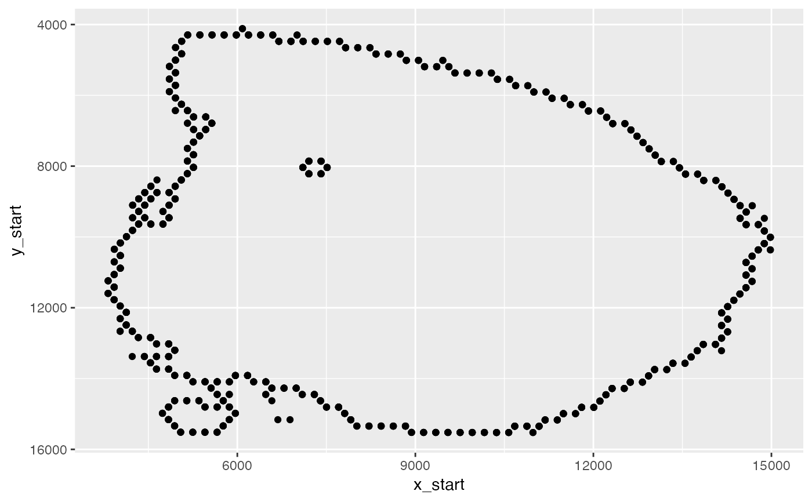
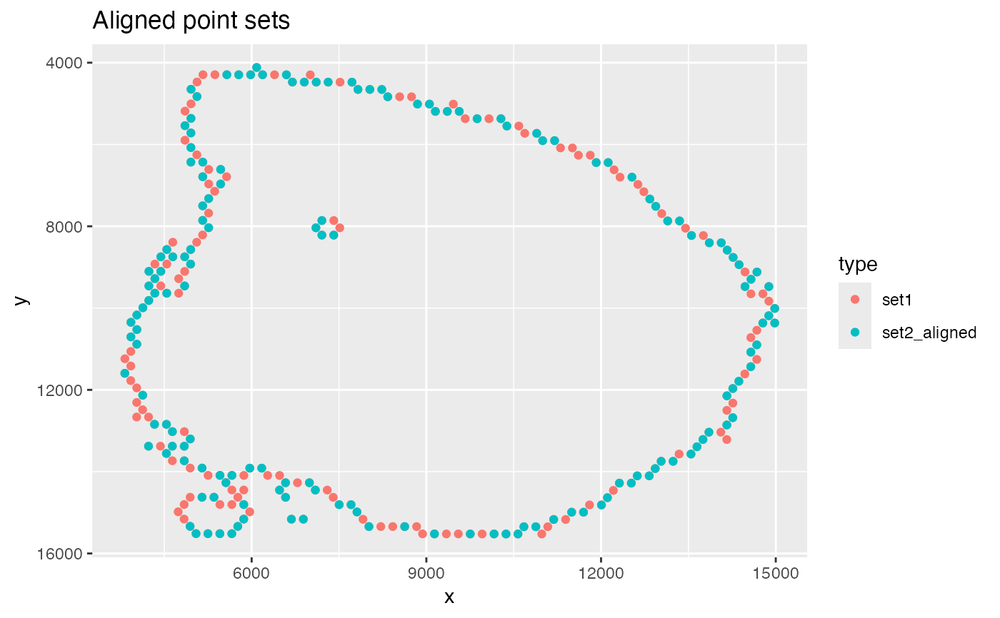

Iterative Closest Point algorithm ICP
icp.RdAligns two sets of unpaired point sets by applying rotations and translations. The point sets can be of unequal length.
Value
A list with the following objects:
y_transf: n x 2 matrix of aligned query points
rot_mat: 2 x 2 rotation matrix
Examples
library(semla)
library(dplyr)
library(ggplot2)
# Load example mouse brain data
se_mbrain <- readRDS(system.file("extdata/mousebrain",
"se_mbrain",
package = "semla"))
# Get spatial network
spatnet <- GetSpatialNetwork(se_mbrain)
# Keep tissue border points
n1 <- spatnet[[1]] |>
filter(nn < 6)
ggplot(n1, aes(x_start, y_start)) +
geom_point() +
scale_y_reverse()

# get spot coordinates points
xy <- GetStaffli(se_mbrain)@meta_data |>
filter(barcode %in% unique(n1$from)) |>
select(pxl_col_in_fullres, pxl_row_in_fullres) |>
setNames(nm = c("x", "y")) |>
bind_cols(type = "set1")
xy_diff <- CoordTransform(xy_coords = xy[, 1:2],
angle = 30,
xy_offset = c(500, 500)) |>
slice_sample(n = nrow(xy) - 100) |>
setNames(nm = c("x", "y")) |>
bind_cols(type = "set2")
xy_orig <- bind_rows(xy, xy_diff)
# Plot point sets
ggplot(xy_orig, aes(x, y, color = type)) +
geom_point() +
scale_y_reverse() +
labs(title = "Original point sets")
res <- icp(xy_ref = xy[, 1:2], xy_query = xy_diff[, 1:2])
xy_aligned <- xy |>
bind_rows(bind_cols(setNames(res$y_transf|> as_tibble(.name_repair = "minimal"),
nm = c("x", "y")),
type = "set2_aligned"))
# Plot aligned point sets
ggplot(xy_aligned, aes(x, y, color = type)) +
geom_point() +
scale_y_reverse() +
labs(title = "Aligned point sets")

# We can obtain the rotation angle in degrees from
# the results
atan2(res$rot_mat[2, 1], res$rot_mat[1, 1])*(180/pi)
#> [1] -30